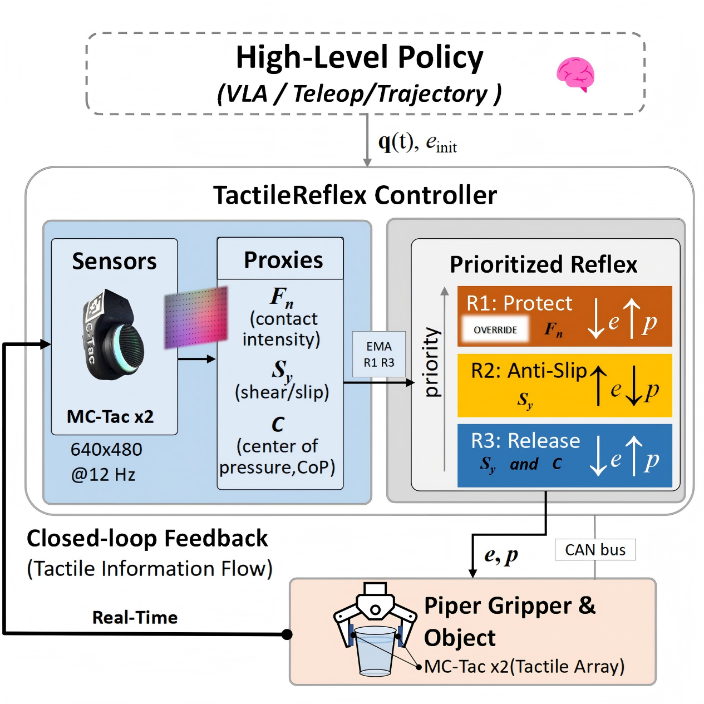
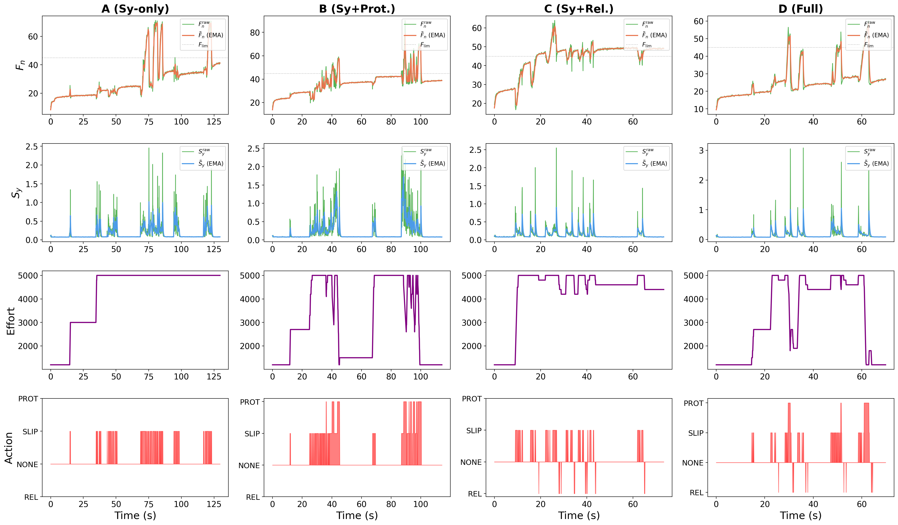
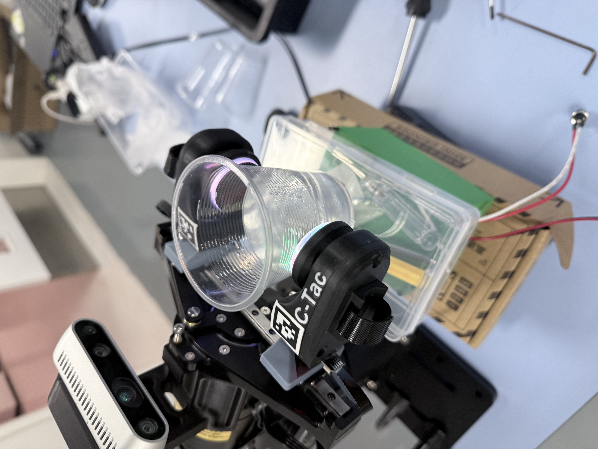
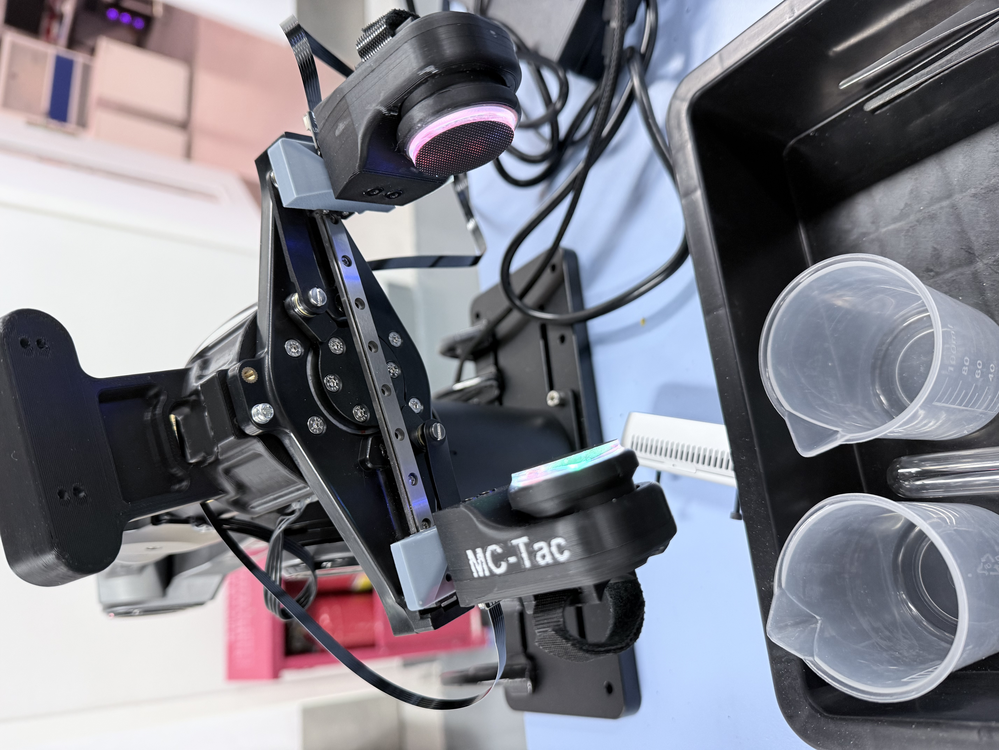
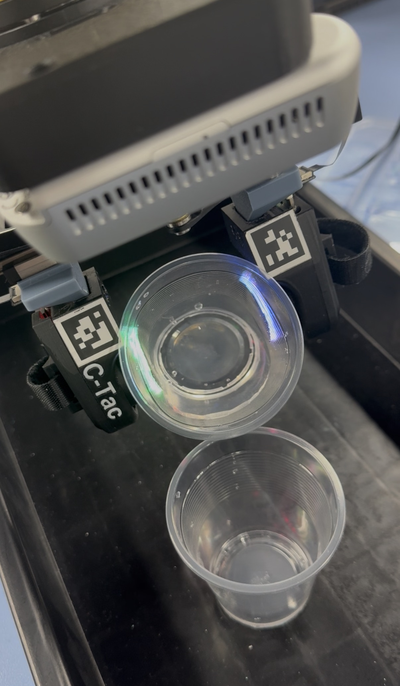

Accepted at IEEE/RSJ IROS 2026
TactileReflex
Noise-Statistics-Driven Vision-Tactile Reflex Control
for Force-Sensitive Manipulation
1 Thrust of Robotics and Autonomous Systems, The Hong Kong University of Science and Technology (Guangzhou)
2 School of Mechanical Engineering, Shanghai Jiao Tong University
success
ablation success
calibration
reflex control
Manipulating fragile deformable containers, such as disposable plastic cups filled with liquid, demands real-time grip-force adaptation within an extremely narrow force margin: insufficient force causes slip, while excessive force irreversibly deforms the thin wall.
We propose a noise-statistics-based, calibration-driven reflex control paradigm with vision-based tactile sensing. By analyzing the sensor’s intrinsic noise characteristics through a brief static-hold-and-unload protocol, all controller thresholds are derived directly—eliminating external force calibration, trial-and-error manual tuning, and material-specific physical models.
Instantiating this paradigm, TactileReflex is a three-channel closed-loop controller that extracts shear intensity (Sy), contact intensity (Fn), and center of pressure (C) from dual visuo-tactile sensors. Its prioritized reflex channels operate at approximately 12 Hz for slip suppression, weight-adaptive release, and force protection.
In ablation experiments, only the complete three-channel system prevents irreversible container deformation, achieving 5/5 successes. In dynamic pouring, fixed-effort baselines fail in all ten trials, while TactileReflex achieves 9/10 successes across two water volumes. As an interpretable, self-contained controller, it can serve as a plug-and-play safety layer beneath teleoperation and vision-language-action policies.

01 / Motivation
Grip firmly.
Never crush.
Fragile deformable containers leave robots an extremely narrow force margin: too little grip causes slip; too much causes irreversible deformation. TactileReflex continuously adapts the grasp inside that margin.
↓Under-gripping
Liquid motion shifts the load and causes pose drift or object drop.
×Over-gripping
Thin walls permanently deform before conventional safeguards react.
✓Our reflex
Fast, interpretable corrections stabilize the object locally.
02 / Method
Three signals.
Three prioritized reflexes.
Dual vision-based tactile sensors turn raw contact images into interpretable proxies. Every threshold comes from a brief static-hold-and-unload calibration—no external force sensor, material model, or trial-and-error tuning.
Anti-slip
Shear intensity detects incipient slip and tightens the grasp immediately.
TIGHTEN ↑Adaptive release
Center-of-pressure shift tracks a lighter load and safely releases excess effort.
RELAX ↓Force protection
Contact intensity enforces a hard safety boundary and overrides other channels.
PROTECT ⊣
03 / Experiments
Built for the
messy real world.
Validated on real hardware with transparent cups, changing water loads, sensor asymmetry, and haptic-free VR teleoperation.



Fixed-effort baseline0 / 10
All pouring trials fail under dynamic load.
TactileReflex9 / 10
Robust across two water volumes.
04 / Code Release
Explore the
reflex stack.
The research code is publicly available, including tactile signal processing, three-channel reflex control, calibration utilities, and instructions for reproducing the experiments.
PAPER IMPLEMENTATION · MC-TAC
Dual-sensor reflex control
The original experimental controller (approximately 12 Hz) and a separately optimized, 25 Hz-target implementation. A calibration script estimates candidate thresholds from static-hold, slip, and unloading trials.
ADDITIONAL SENSOR BACKENDS
DM-TAC & Xense
Additional implementations of the reflex strategy for other tactile sensors. Vendor SDKs, axis checks, and setup-specific recalibration are required before hardware use.
05 / Citation
Build on
TactileReflex.
Please cite our IROS 2026 paper if you find this work useful.
BIBTEX
@inproceedings{feng2026tactileReflex,
title = {TactileReflex: Noise-Statistics-Driven
Vision-Tactile Reflex Control for
Force-Sensitive Manipulation},
author = {Feng, Ziyan and Fu, Yulong and Li, Zheng
and He, Yuxin and Ren, Jieji and Zhong, Yudong
and Wang, Lujia and Zhou, Jinni and Nie, Qiang},
booktitle = {IEEE/RSJ International Conference on
Intelligent Robots and Systems (IROS)},
year = {2026}
}